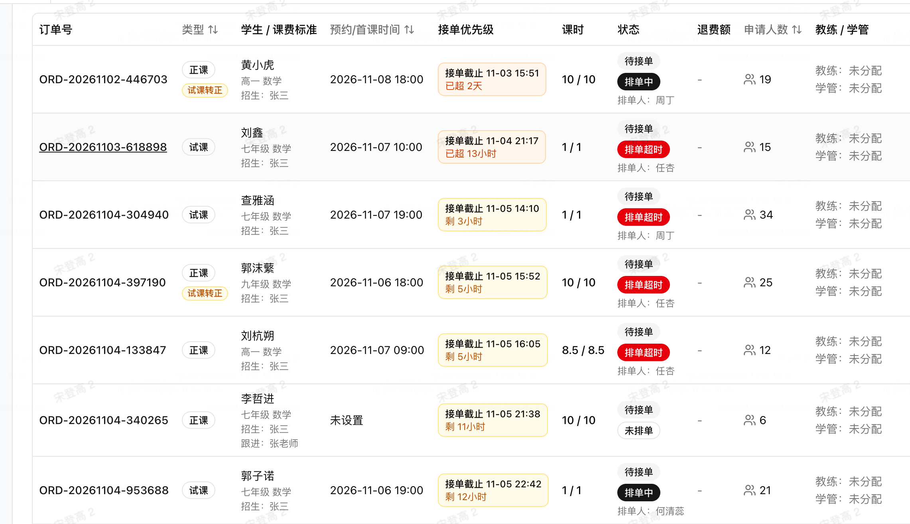
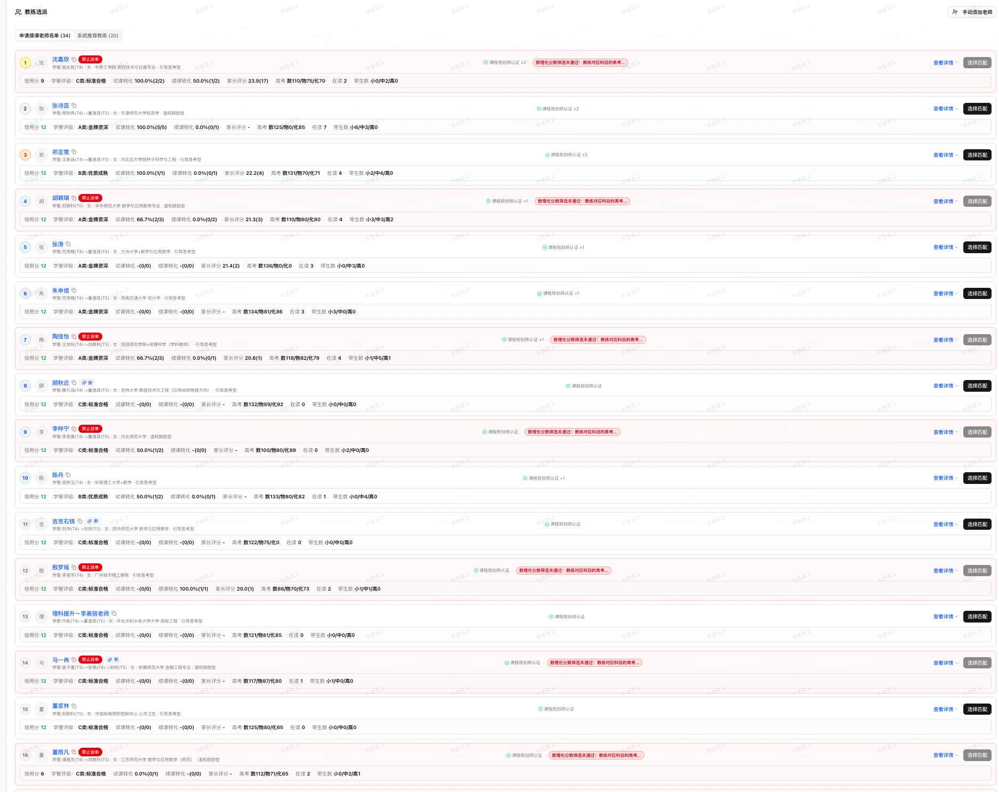

一份订单，就是一份匹配任务。
无论预约试课还是安排正课，先在系统中提交需求。年级科目、当前基础、希望解决的问题、上课时间与课时安排越明确，后续比较就越有方向。
家长得到的：围绕自己孩子的具体需求找教练。
伴学教练择优匹配机制 · 试课 / 正课
一个订单，汇聚多位教练的主动申请；一次选派，综合孩子需求、教练能力与服务状态。让庞大的师资资源，真正转化为每个孩子的选择空间。
把选择做充分，把匹配做具体，把质量落实到每一项依据。
一眼看懂：孩子的需求，如何变成一次有依据的选派
把年级、科目、学习情况和上课安排说清楚。
教练结合自身能力与时间，选择适合的订单申请。
结合教练档案、历史服务记录和系统限制比较。
权衡匹配度与服务安排，选定本次合适的教练。
从孩子出发 / 让选择更充分
这套“投标式”机制，可以理解为教练主动申请、平台综合择优。这里比的是谁更适合这个孩子：教练先判断自己能否胜任，排课老师再站在孩子的角度做综合选择。
无论预约试课还是安排正课，先在系统中提交需求。年级科目、当前基础、希望解决的问题、上课时间与课时安排越明确，后续比较就越有方向。
家长得到的：围绕自己孩子的具体需求找教练。
后台几千名伴学教练，根据订单要求，结合自己的学科能力、带学经验和时间安排选择申请。主动申请让教练有机会先评估：这个孩子的需求，我能否承接？
家长得到的：从主动申请的候选教练中进一步择优。
系统呈现教练的院校专业、学科成绩、带生情况、学管评级、家长评分等信息，并显示相关派单限制。排课老师可以结合这些信息，交叉判断教练的能力与服务状态。
家长得到的：选派有资料、有记录，也有规则约束。
排课老师综合考虑孩子的基础与性格、教练的学科优势与引导风格、可用时间及当前带生负荷，从候选教练中选定本次更合适的人选。申请是进入比较，最终选派还要经过人工把关。
家长得到的：能力、沟通方式和持续服务安排一起考虑。
真实系统 / 看得见的选派依据
从一笔订单有多少人申请，到每位候选教练的资料和限制，选派所需的信息呈现在同一个工作流程里。点击截图可放大查看。
截图中的订单覆盖试课和正课，列出了年级科目、预约时间、课时及申请人数。

年级、科目、试课或正课及时间安排，为匹配提供清晰起点。
图中不同订单有 6、15、21、34 等不同申请人数，提供进一步比较的机会。
接单截止、排单状态及负责人有记录，便于发现超时、跟进安排。
申请人数是截图中各订单当时的状态，实际人数随需求、时间及可用教练变化。
教练选派页同时呈现主动申请名单、系统推荐教练，以及候选人的能力与服务信息。

结合院校专业、学科成绩、相关认证和引导风格，判断能否承接需求。
结合学管评级、家长评分、在读人数和带生经验，判断服务表现与精力安排。
图中有“禁止派单”标记及原因提示，提醒选派时核对相应资格要求。
历史评分、试课与续课转化记录需要结合样本量理解，是综合判断的参考；孩子的实际适配情况仍需通过课程反馈检验。
机制的价值 / 把质量关口前移
它把师资规模、教练意愿、系统记录和人工判断接在一起。每一层解决一个问题，共同提高找到合适教练的机会。
几千名教练意味着可以覆盖更多学科优势、沟通风格和可用时段。孩子需求越具体，丰富的师资组合越能为匹配提供空间；进入申请名单后，再逐一比较适配情况。
教练先根据订单判断能力与时间是否适合，排课老师再结合孩子需求评估候选人。两端都参与判断，有助于提前发现能力或时间上的不合适，减少无效匹配。
学科资料、带生经验、家长反馈、当前带生情况与派单限制放在一起看，可以从多个角度核对。资格要核对、服务表现要参考、带生负荷要考虑，选派理由因此更具体。
同样是数学薄弱，有的孩子需要耐心拆解，有的需要启发思路，有的更需要节奏与习惯引导。排课老师把这些个体差异与教练特点放在一起权衡，让“有能力”进一步走向“适合这个孩子”。
时间能否配合、教练当前带多少学生、能否投入足够精力，都影响后续服务。把这些因素提前纳入判断，有助于减少安排冲突，让试课体验与正课衔接更有基础。
举个例子 / 家长一听就明白
假设有这样一个需求
家长希望教练讲得耐心、能带着孩子梳理思路，并且能固定在周末上课。这个订单，需要把学科能力、沟通方式和时间安排一起考虑。
把孩子的需要，与教练的长处真正对上。
家长沟通 / 招生老师可直接使用
“您预约试课或安排正课后，我们先把孩子的学习需求和上课要求录入系统。后台几千名伴学教练，会结合自己的能力和时间，主动申请适合的订单。
然后，排课老师综合比较：谁擅长孩子需要的内容，谁的引导方式更合拍，谁有精力持续带好孩子。教练资料、家长评分、带生情况和资格限制，都是选派依据。
您看到的是选定的一位教练，背后是‘需求说清楚、教练主动选、数据一起看、专人综合挑’这四步。几千名教练的资源，最终用在为您孩子认真做这一次选择上。”
几千名教练是选择的底气，为每个孩子认真比较，才是服务的诚意。
家长常问 / 把细节讲透
两类订单都可以通过系统提交需求、接受教练申请，再由排课老师综合选派。试课重点关注本次体验与适配情况；安排正课时，还要结合持续上课的时间和服务安排判断。
申请人数多，意味着比较空间更大。最终仍要看候选教练是否符合条件、能否解决孩子的具体问题、时间与精力是否匹配。截图中的申请人数只是各订单当时的情况。
数据帮助了解教练，人工判断负责把这些信息与孩子的实际需求联系起来。孩子的性格、表达习惯、学习困难和家庭安排，都需要综合权衡，因此由排课老师完成最终选派。
可以重点观察：孩子是否听得懂、愿不愿意提问，教练能否发现具体卡点，后续安排能否稳定配合。把这些具体体验反馈给招生或排课老师，作为后续服务安排的判断依据。